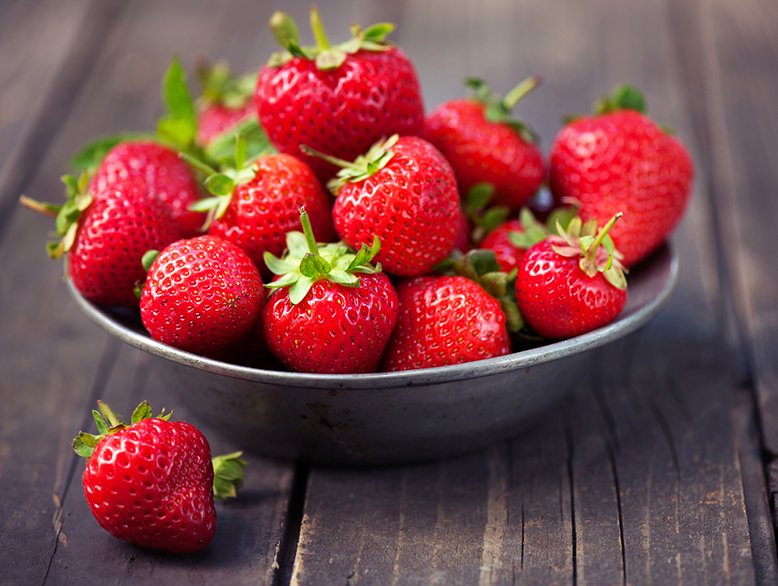

Bienvenue dans l'univers des fraises
Découvrez tout ce que vous avez toujours voulu savoir sur ce fruit rouge délicieux et irrésistible.

Les différentes variétés de fraises
Il existe de nombreuses variétés de fraises, parmi lesquelles :
- La gariguette, petite et allongée, très parfumée.
- La mariguette, très sucrée et juteuse.
- La cléry, très grosse et très sucrée.
Les taille des fraises
Voici les tailles selon les variétés:
-
La gariguette, mesure entre 2 et 3 cm de long.

-
La mariguette, mesure entre 3 et 4 cm de long.

-
La cléry, mesure entre 4 et 5 cm de long.